User Interface
The user interface for Engine Driver is described and explained in these pages as ‘screens’. There are several ‘Main Screens’ which you will routinely interact with and and larger number of ‘Secondary / Support Screens’ that will interact with infrequently.
There are also some settings that impact all of the Engine Driver screens, which are described towards the end of this page:
Localisation (Language)
Main Screens
There are five main screens:
Connection Screen
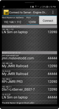This screen is the first screen you normally see when starting Engine Driver. (Other than the first time you start Engine Driver.)
It allows you choose which WiThrottle Server or DCC-EX Server to connect to, which you must do to control your trains.
There are three ways you can select a WiThrottle Server or DCC-EX Server to connect to:
Once you select a server the Throttle Screen will be automatically displayed.
If you only ever connect to one WiThrottle Server or DCC-EX Server you can effectively bypass this screen by enabling the Auto-Connect to WiThrottle Server? preference.
Note
See WiFi Issues for more assistance with connection difficulties.
Connection Method Options
IP Address and Port
Enter the IP address or URI of the server in the first field, and the port in the second field, then click Connect. Engine Driver will attempt to connect to it, and the Throttle Screen will be displayed.
Discovered Servers
This is the most common way to connect.
Your WiThrottle Server or DCC-EX Server will attempt to broadcast its details so that apps like Engine Driver can automatically find it. If Engine Driver does find it, it will be listed here.
To connect to any WiThrottle Server or DCC-EX Server in this list, simply click on the row. Engine Driver will attempt to connect to it, and the Throttle Screen will be displayed.
Recent Servers
To connect to any WiThrottle Server or DCC-EX Server in this list, simply click on the row. Engine Driver will attempt to connect to it. If successful the Throttle Screen will be displayed.
Note that, just because it is in this list, it does not mean that you can connect to it now. It only means that you have successfully connected to it in the past.
Action Bar (Connection Screen)
The Action Bar appears at the top of all screens. It will show different information and different buttons depending on a) the particular screen and b) preferences you have set.
In the Connection Screen the Action Bar only displays:
The app name (Engine Driver)
Note
See the Action Bar section of this page for more information.
Throttle Screen
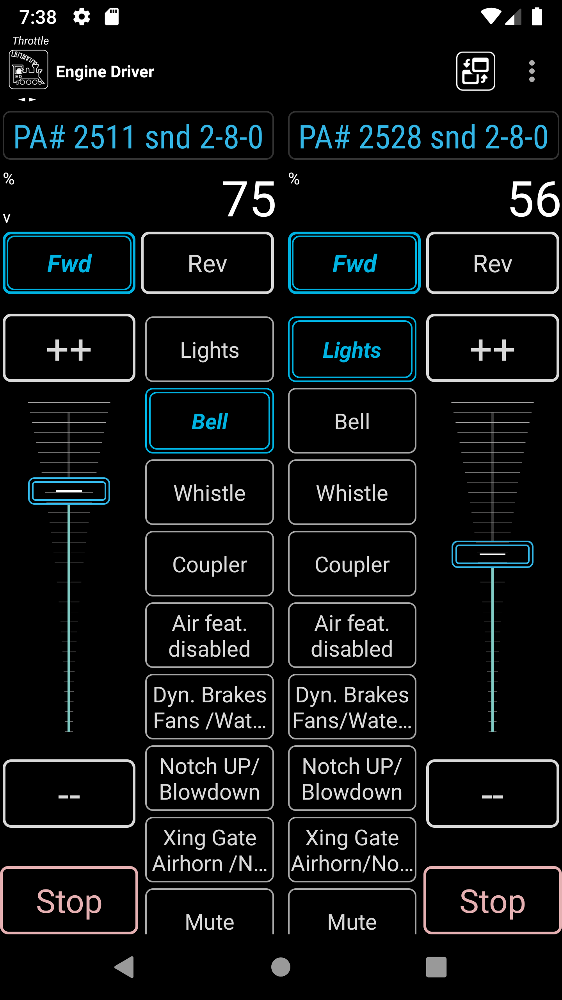{kind=link}
The Throttle Screen has two distinct areas:
The Action Bar
One or more Throttle Areas
There are also some settings that impact the whole Throttle Screen which described towards the end of this section:
Background
Immersive Mode (Full Screen)
Swipe Up / Down
Accelerometer (Shake)
The Throttle Screen allows you to control:
Access common functions from the Action Bar and Menu
Control one or more locos
The Throttle Screen contains between 1 and 6 Throttle areas depending on the Throttle layout chosen and the number of throttles for that layout (only some allow this to be changed).
Throttle Area
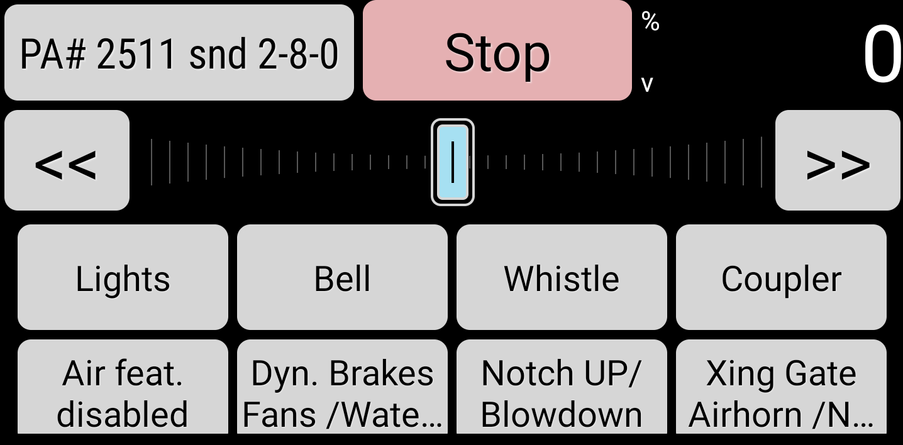{kind=link}
Each Throttle on the Throttle Screen will display different information and buttons depending on the Throttle Screen Layout in the Throttle Screen Layout preference.
Each Throttle Area allows you to:
Select and release locos
Control the speed and direction of your trains
Activate DCC decoder functions like the light, bell, horn
Activate Virtual (IPLS) Sounds (bell, horn, short horn) (if enabled)
{kind=link}
Speed indicator
The Speed Indicator or Speed area of each throttle of the Throttle Screen indicates the throttle amount/setting (rather than the actual speed of the locos controlled by the the throttle).
Depending on the Speed Units Preference the upper limit shown will be different:
Speed Unit Setting |
Low value |
High Value |
|---|---|---|
Percent 0 - 100% |
0 |
100 |
Auto Speed steps |
? |
? |
8 steps |
0 |
8 |
10 steps |
0 |
10 |
14 steps |
0 |
14 |
28 steps |
0 |
28 |
128 steps |
0 |
128 |
Also, if one of the Shunting/Switching layouts is selected, the high number will be negative (‘-’) when reversed (e.g. -100 - 0 - 100)
The Speed Indicator area also can show:
Volume indicator
Gamepad Indicator
Direction indicator (Shunting/Switching Layouts only)
Volume Indicator
A ‘V’ will be shown in the Speed Indicator area to indicate which throttle is being controlled by the hardware volume buttons. Touch another Speed Indicator to change which Throttle the Hardware Volume buttons control.
Gamepad Indicator
A number (‘1’,’2’, etc.) will be shown in the Speed Indicator area to indicate which throttle is being controlled by the each connected gamepad. Set one of the gamepads to allow you to switch throttle it controls.
Direction Indicator
If one of the Shunting/Switching layouts is selected, a triangle symbol will be shown to indicate direction (pointing Up for forward, and down for reverse).
Note
See the Throttle Control Preferences section of the Speed Units preference for a information on changing the Speed Units options.
Speed Slider Area
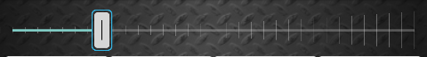{kind=link}
The Throttle areas can be configured to have a Speed Slider. (All Throttle Screen Layouts except the ‘Big Button’ layouts include sliders by default.)
Dragging you finger along the slider will increase or decrease the speed of the loco(s) selected for the that Throttle.
Pressing and holding your finger at one spot on the slider will cause Engine Driver to slowly increase or decrease the speed of the loco(s) selected for that Throttle till it gets to that point.
Depending on the Throttle Screen Layout chosen in the Throttle Screen Layout preference, all sliders on the Throttle Screen will be either:
one-directional (0% - 100%) [1]
orbi-directional (-100% - 0 - +100%)
Bi-directional sliders are useful for when you are switching/shunting. i.e. moving your locos backwards and forwards a lot.
Several preferences can change the appearance or actions of the Speed Slider:
Increase Slider/Speed Height?
When set, this preference will show a taller Slider, or Speed buttons, for throttlesThrottle Speed Slider Margin
When set, this changes the space between either the edge of the screen and the ends of the Slider, or if the Speed Buttons are enabled, the edge of the Speed Buttons and the ends of the Slider. Specific in pixels haw far to offsetHide Speed Slider?
When this preferences is set, Engine Driver will not show speed slider, use speed buttons insteadTick Marks on Speed Sliders?
When this preferences is set, Engine Driver will show tick marks on the background of the Speed SlidersSwitching throttle Dead Zone
When this preferences is set, Engine Driver will set the size of the dead zone, or detent, on the slider of the Switching/Shunting Throttle ScreenStop Button Vertical Margins
When this preferences is set, Engine Driver will add the entered number of pixels to offset margins of the stop button from the speed buttons and bottom of screen
{kind=link}
{kind=link}
{kind=link}
{kind=link}
Load Slider Area
This is unique to the Semi-Realistic Throttle (SRT).
The ‘Load’ slider is intended to simulate if the train you are controlling has none, a few, many, or a huge number of carriages behind it. Load can also be increased or decreased to simulate going up or down a slope.
The Load can be set to show either a percentage slider or a slider with a distinct number of steps/notches.
The maximum load can be set in the preferences. (the Default is 1000%) The Load slider is exponential in scale, so from notch 0 to 1 to 2 only small increases of load are applied, but by the final notches, huge changes are applied.
Refer to the Semi-Realistic Throttle (SRT) page for more information.
Brake Slider Area
This is unique to the Semi-Realistic Throttle (SRT).
The ‘Air Brake’ feature is designed to simulate a very rough approximation of the Westinghouse Air Brake system used by early US railroads.
The Brake slider can be used with or without the simulation of the Air Reservoir and Air Line.
Refer to the Semi-Realistic Throttle (SRT) page for more information.
Web View Area (Throttle Web View)
Todo
Web View Area (Throttle Web View)
Optional, shows a web browser in the lower half of the Throttle Screen.
Your JMRI Layout panels can be displayed here if you have configured them in JMRI.
Anything that can be shown in the Web View Screen can equally be shown here, just in a smaller space.
Note
see preference
see initial page preference
different to the main Web View Screen including a different preference to set the initial page.
see increase size
Action Bar (Throttle Screen)
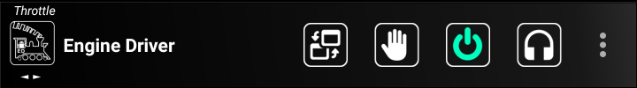{kind=link}
The Action Bar appears at the top of all screens. It will show different information and different buttons depending on a) the particular screen and b) preferences you have set.
In the Throttle Screen the Action Bar can display:
The app name (Engine Driver)
Optionally configured information:
Fast Clock
Children’s Timer Status and Countdown
Full Screen or Action Bar Only left/right swipe
WiThrottle Server or DCC-EX Server Name
Optionally configured buttons:
Emergency Stop (EStop)
Track Power
Flashlight
Throttle Web View
Throttle Layout Switching
In Phone Loco Sound
Children’s Timer
Note
The optional action bar buttons are enabled via the .
See the Action Bar section of this page for more information.
Overflow Menu (Throttle Screen)
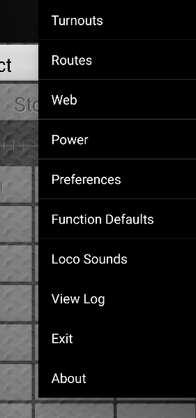{kind=link}
The Overflow Menu (or simply ‘Menu’) appears in the Action Bar at the top of most of the Main Screens is normally three dots (⁞) or three bars (≡). It will show different options depending on a) the particular screen, b) preferences you have set and c) the state of certain elements in the app.
Specific to the Throttle Screen, the Overflow Menu can display:
Turnouts/Points Screen (All except the Turnout/Points Screen only)
Routes Screen> (All except the Routes Screen only)
Gamepads (Throttle Screen only)
Loco Sounds (Throttle Screen only)
DCC-EX Screen (If connected to a DCC-EX EX-CommandStation using the Native DCC-EX Protocol only)
DCC-EX Function Settings Screen (If connected to a DCC-EX EX-CommandStation using the Native DCC-EX Protocol only)
Note
See the Overflow Menu section for more information.

Background
Engine Driver can show a background image of your choosing on the Throttle Screen. Any image/photo on your device/phone can be used.
Note
See the Background Images section of the preferences for more information on how to select a background image.
Immersive Mode (Full Screen)
Todo
Immersive Mode (Full Screen)
Immersive mode hides the system navigation buttons at the bottom of the screen on the Throttle screen only, to give you more screen real estate for the throttle UI.
It can optionally also hide the Android System Status Bar at the top of the page.
Swiping up from off screen will normally temporarily show the Android navigation buttons again.
You can also configure specific Swipe up or Swipe down or Shake preferences to enter or exit immersive mode.
Note
See the Swipe Up-Down Preferences for more information on how to configure immersive mode.
Swipe Left / Right (From Throttle)
Swiping Left from the Throttle Screen will take you to the Routes Screen, unless it has been disabled in the preferences
Swiping Right from the Throttle Screen will take you to the Turnouts/Points Screen, unless it has been disabled in the preferences
By default, you can Left/Right Swipe from any part of the screen, but this can be changed to just the Action Bar in the preferences. This can be useful if Left/Right swipes in the Web View Screen and Throttle Web view causes problems.
Note
See the Left/right swipe preferences for information on how to enable and disable which screens are in the Left / Right swipe sequence.
See the Disable Full Screen Swipe prefernce to enable or disable the Swipe Action Bar only option.
Swipe Up / Down
Swiping Up and/or Down on the Throttle page can optional be configured to:
Do Nothing
Hide the Web View (if enabled)
Lock and Dim the screen
Dim the screen
Enable/Disable Immersive mode
Switch Throttle Layouts
Increase/Decrease Loco speed
Go to the next throttle
Note
See the Swipe Up/Down preferences for information on how to configure what the up and down swipes do.
Accelerometer (Shake)
Shaking your device/phone while on the Throttle page can optional be configured to:
Do Nothing
Hide the Web View (if enabled)
Lock and Dim the screen
Dim the screen
Switch Throttle Layouts
Go to the next throttle
Note
See the Accelerometer (Shake) preferences for information on how to configure what the Accelerometer (Shake) do.
Turnouts/Points Screen
Accessed from any of the Main Screens by the or or by swiping right from the Throttle Screen if enabled in the Left with the Swipe through Turnouts? or Swipe through Points? preference:
This screen allows you to display all Turnouts/Points that have been defined in JMRI.
Turnouts/Points can be operated three ways:
By entering the DCC Address
From the Defined Turnout/Point list provided by the WiThrottle Server or DCC-EX Server (JMRI)
From the Recent Turnout/Point list
Turnouts/Points can be changed from ‘Closed’ to ‘Thrown’ and vice versa be pressing on either the Closed or Thrown buttons
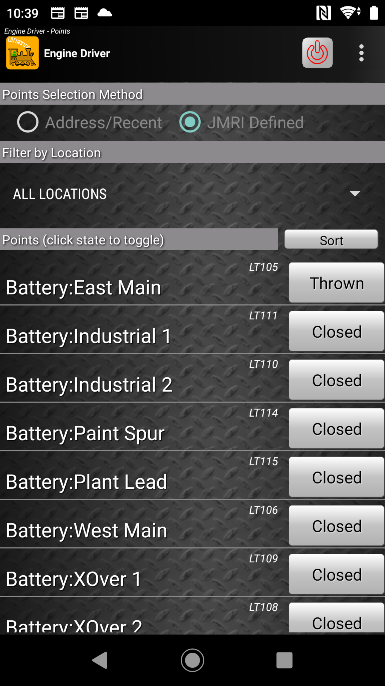{kind=link}
Via the list from Server
By selecting the ‘JMRI Defined’ radio button, Engine Driver will show the Turnouts/Points defined in the Command Station/Server.
Click on the button(s) on the beside the entry to Throw` or Close the Turnout/Point.
Note:
If the Turnout/Point button says ‘Thrown’, then clicking on the button will ‘Close’ the Turnout/Point and the button will then say ‘Closed’.
If the Turnout/Point button says ‘Closed’, then clicking on the button will ‘Throw’ the Turnout/Point and the button will then say ‘Thrown’.
Note
Note that this list can optionally be set to always show Close and Throw rather than Closed or Thrown by setting the Always Show Throw/Close? preference.
{kind=link}
By Entering an Address
By selecting the ‘Address/Recent’ radio button, Engine Driver will allow you to throw/close any arbitrary Turnout/Point.
Enter the address of the Turnout/Point and press any of the buttons:
Throw
Close
Toggle
Recent
By selecting the ‘Address/Recent’ radio button, Engine Driver will allow you to throw/close any recently used Turnout/Point.
Click on the buttons on the beside the entry to ‘Throw’ or ‘Close’ the Turnout/Point.
Filter by location
The ‘Turnout/Points List’ can be filtered. The filtering relies on the idea that the first part of every Turnout/Point name is a ‘Location’, followed by a common separator, then the actual name for the Turnout/Point name. The ‘filter’ then allows you to select one of those locations and Engine Driver can just show the Turnout/Points at the ‘Location’.
The Location Delimiter preference allows you to set the character that marks the end of the Location portion of Turnout/Point and Route names. By default it is a colon (“:”) but any character can be used.
Note
A number of preferences can alter the way Turnouts/Points are displayed. See Turnouts/Points and Routes Preferences for more information.
Action Bar (Turnouts/Points Screen)
The Action Bar appears at the top of all screens. It will show different information and different buttons depending on a) the particular screen and b) preferences you have set.
In the Turnouts/Points Screen the Action Bar can display:
The app name (Engine Driver)
Optionally configured information:
Fast Clock
Full Screen or Action Bar Only left/right swipe
WiThrottle Server or DCC-EX Server Name
Optionally configured buttons:
Emergency Stop (EStop)
Track Power
Flashlight
Note
The optional buttons are enabled via the .
See the Action Bar section of this page for more information.
Swipe Left / Right (From Turnouts/Points)
Swiping Left from the Turnouts/Points Screen will take you to the Throttle Screen, unless it has been disabled in the preferences
Swiping Right from the Throttle Screen will take you to the Web View Screen, unless it has been disabled in the preferences
By default, you can Left/Right Swipe from any part of the screen, but this can be changed to just the Action Bar in the preferences. This can be useful if Left/Right swipes in the Web View Screen and Throttle Web view causes problems.
Note
See the Left right swipe preferences for information on how to enable and disable which screens are in the Left / Right swipe sequence.
See the Disable Full Screen Swipe prefernce to enable or disable the Swipe Action Bar only option.
Routes Screen
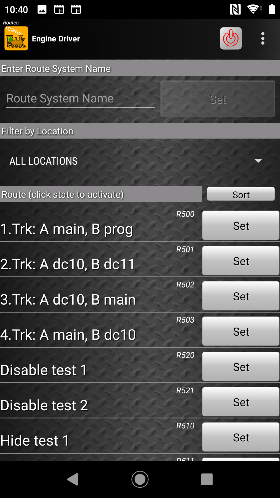{kind=link}
Accessed from any of the Main Screens by the menu or by swiping left from the Throttle Screen if enabled in the Left with the Swipe through Routes? preference:
This screen displays all Routes that have been defined in your Command Station/Server and allows you to activate them.
By System name
You can enter the route ID and click Set button to activate a route.
Via the List from the Server
You can select the route from the list provider by your Command Station/Server…
Click on the Set buttonon the beside the entry to activate the Route.
Note, When using the Native DCC-EX Protocol the DCC-EX EX-CommandStation (only) can:
dynamically change the label on the the button
dynamically show or hide Routes
dynamically enable or disable Routes
Filter by location
The ‘Routes List’ can be filtered. The filtering relies on the idea that the first part of every Route name is a ‘Location’, followed by a common separator, then the actual name for the Route name. The ‘filter’ then allows you to select one of those locations and Engine Driver can just show the Routes at the ‘Location’.
The Location Delimiter preference allows you to set the character that marks the end of the Location portion of Turnout/Point and Route names. By default it is a colon (“:”) but any character can be used.
Note
A number of preferences can alter the way Routes are displayed. See Turnouts/Points and Routes Preferences for more information.
Action Bar (Routes Screen)
The Action Bar appears at the top of all screens. It will show different information and different buttons depending on a) the particular screen and b) preferences you have set.
In the Routes Screen the Action Bar can display:
The app name (Engine Driver)
Optionally configured information:
Fast Clock
Full Screen or Action Bar Only left/right swipe
WiThrottle Server or DCC-EX Server Name
Optionally configured buttons:
Emergency Stop (EStop)
Track Power
Note
The optional buttons are enabled via the .
See Action Bar section of this page for more information.
Swipe Left / Right (From Routes)
Swiping Left from the Routes Screen will take you to the Web View Screen, unless it has been disabled in the preferences
Swiping Right from the Routes Screen will take you to the Throttle Screen, unless it has been disabled in the preferences
By default, you can Left/Right Swipe from any part of the screen, but this can be changed to just the Action Bar in the preferences. This can be useful if Left/Right swipes in the Web View Screen and Throttle Web view causes problems.
Note
See the Left right swipe preferences for information on how to enable and disable which screens are in the Left / Right swipe sequence.
See the Disable Full Screen Swipe prefernce to enable or disable the Swipe Action Bar only option.
Web View Screen
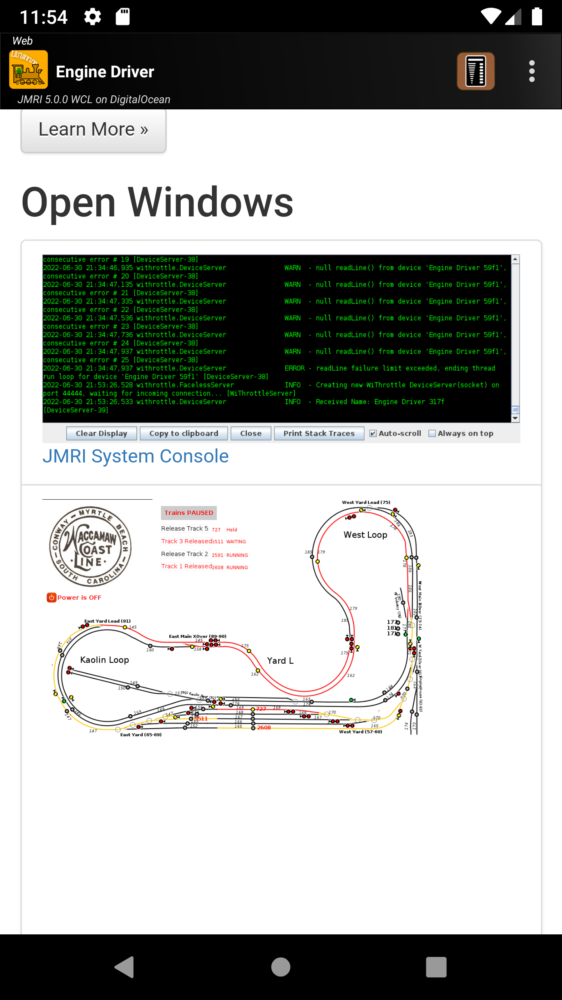 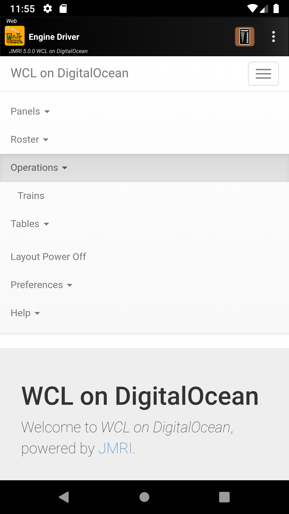{kind=link}
{kind=link}
Todo
Web View Screen
Accessed from any of the main screens by the menu or by swiping left or right twice from the Throttle Screen if enabled in the Left with the Swipe through Web? preference:
It can also be accessed, if the Screen orientation preference is set to Auto Web, by rotating the Android Device/Phone.
This screen displays a web browser interface that lets you view any web page. Normally this will be a web page on your JMRI server.
From the JMRI web server you can view and interact with additional features of JMRI. The menu at the top right of the web panel screen allows you to further display:
Rosters
Operations
Trains
Tables
Turnouts/Points
Sensors
Routes
Reporters
Memories
Blocks
Layout Blocks
Lights
Signal Masts
Signal Heads
Locations
Cars
Engines
ID Tags
This can be used for:
A webThrottle screen
Your JMRI layout panel(s)
Any URL in a full screen. This is in addition to being able to display your JMRI layout panel in a small section of the main Throttle Screen.
Tap on any of the Open Windows to expand its view. You can then resize the panel by pinching and zooming. It is sometimes useful to rotate your device to landscape mode, so as to better view your layout.
Action Bar (Web View Screen)
The Action Bar appears at the top of all screens. It will show different information and different buttons depending on a) the particular screen and b) preferences you have set.
In the Web View Screen the Action Bar can display:
The app name (Engine Driver)
Optionally configured information:
Fast Clock
Full Screen or Action Bar Only left/right swipe
WiThrottle Server or DCC-EX Server Name
Optionally configured buttons:
Emergency Stop (EStop)
Track Power
Note
The optional buttons are enabled via the .
See Action Bar section of this page for more information.
Swipe Left / Right (Web View Screen)
Todo
Swipe Left / Right (Web View Screen)
Secondary / Support Screens
The follow additional screens will be shown at different times and for various reasons:
Intro/Setup Wizard Screen
The Setup Wizard will start automatically the first time you run Engine Driver after you install it. It sets some basic preferences and asks for the necessary permissions. These preferences can be subsequently be changed use the : , or by re-running the wizard, which can only be done from the menu on the Connection Screen.
Note
See the Setup wizard page for more information.
Loco Select Screen
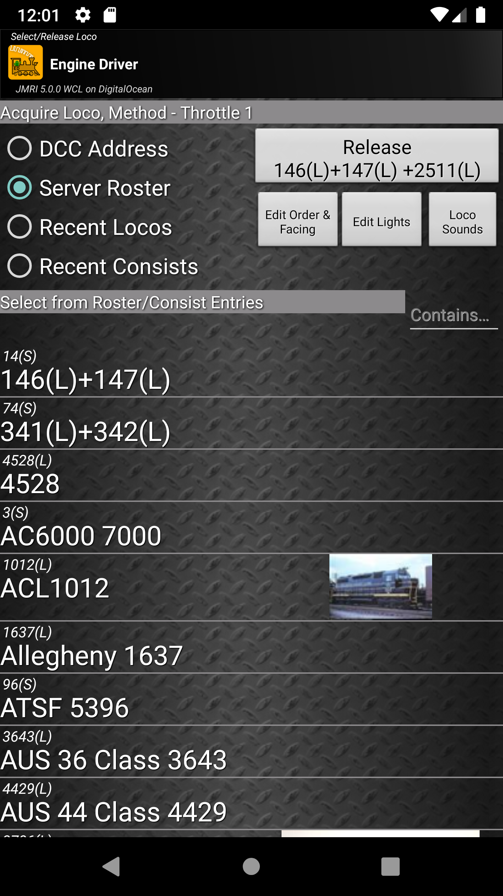{kind=link}
The Loco Select Screen allows you add locos to a (one of) throttle on the Throttle Screen. It also provides access to the additional screens for ‘Editing the Consist’, ‘Editing Lights’ and editing the ‘In Phone Locos Sounds’.
The Loco Select Screen is only shown when you click a Select button on the Throttle Screen.
Not that the Select button will should the Address(es) or the Name(s) of a|loco_consist| Train only the first loco is selected. Click on the button will (while it is in this state) will again take to this screen to allow to you add additional Locos to the Consist / Multiple Unit Train, or make other changes to the Consist / Multiple Unit Train.
Selection Method
There are four ways you can choose a loco for the Throttle. Select one of the radio buttons depending on how you want to the choose the loco:
DCC Address
Server Roster
Recent Locos
Recent Consists
Select by DCC Address
Shown if you select DCC Address in the Selection Method.
You can enter the loco’s DCC address (verify short or long), and press Acquire to select the loco. You will then be taken back to the Throttle Screen with that loco selected.
Select from Sever Roster
Todo
Select from Sever Roster
Shown if you select Server Roster in the Selection Method.
If the loco you want to control is in the list, simply click on it and you will be taken back to the Throttle Screen with that loco selected.
For this to be possible, the Loco you want to control needs to be in the Server Roster of the WiThrottle Server or DCC-EX Server. Not all WiThrottle Server or DCC-EX Server support a Server Roster. Refer to the JMRI documentation or your WiThrottle Server or DCC-EX Server device’s documentation for creating a Server Roster.
Filter
Icons
Icons - adding a local image
Long Press to see details… (and add icon)
Select from Recent Locos List
Todo
Select from Recent Locos List
Shown if you select Recent Locos in the Selection Method.
Engine Driver remembers the last 10 locos that you have selected. (That number can be increased or decreased with Maximum Recent Locos preference.)
If the loco you want to control to is in the list, simply click on it and you will be taken back to the Throttle Screen with that loco selected.
Icons - From Server Roster
Long Press to see details…
Swipe to remove entry…
Select from Recent Consists List
Todo
Select from Recent Consists List
Shown if you select Recent Consists in the Selection Method.
Selecting a Consist / Multiple Unit in the Recent Consists list will automatically add all the remembered locos, including their facing.
Swipe to remove entry…
Consist Edit Screen
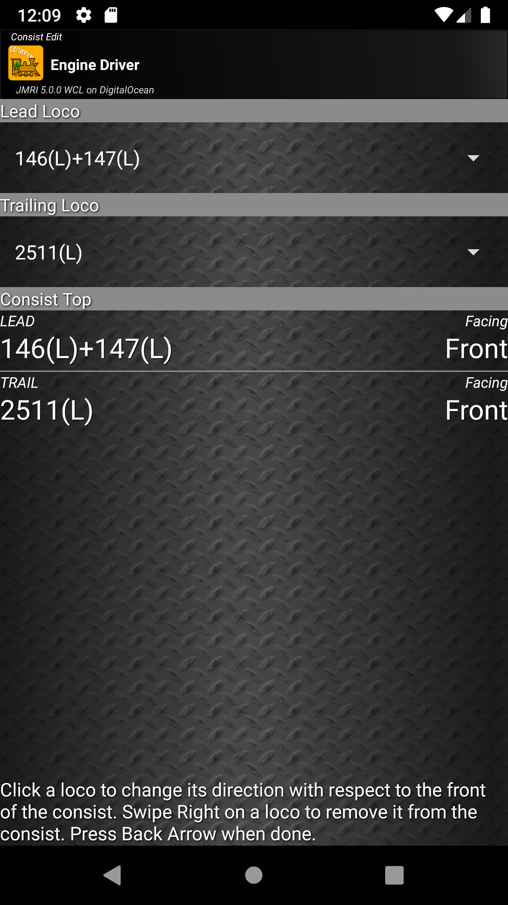{kind=link}
Todo
Consist Edit Screen
Shown if you add a second, or subsequent, loco to a throttle via the Select button, or if you click on the Edit Order & Facing button on the Select Loco Screen (which will only be available if you have already acquired more than one loco on the throttle.)
Lead Loco
Todo
Lead Loco
Trailing Loco
Todo
Trailing Loco
Consist Top
Todo
Consist Top
Change Facing
Consist Lights Edit Screen
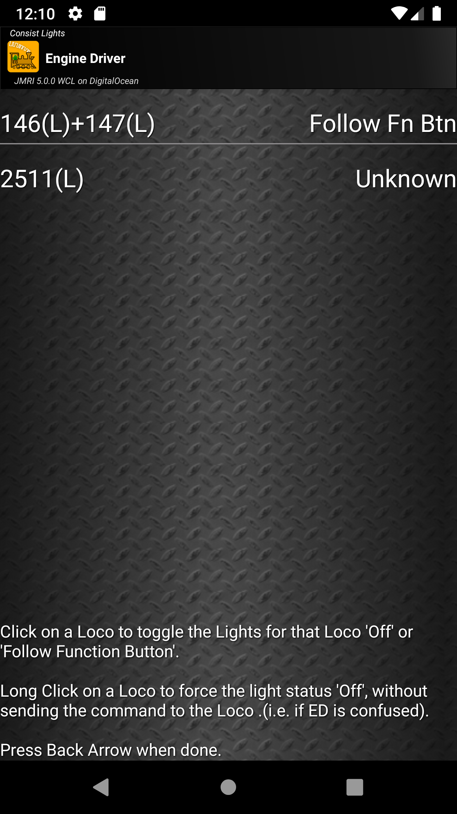{kind=link}
Todo
Consist Lights Edit Screen
Unknown
Follow Fn Btn
Off
Power Screen
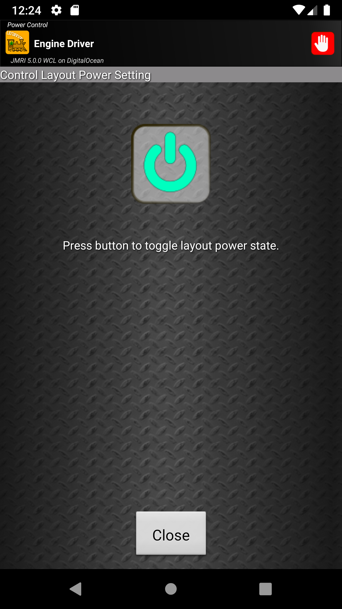{kind=link}
Accessed from any of the main screen via : or from the Action Bar if enabled with the Layout Power button? preference : .
This screen allows you to toggle the state of track power to your layout.
When the button is Green, it indicates that track power is ‘On’.
When the button is Red, it indicates that track power is ‘Off’.
When the button is Amber, it indicates that track power state is unknown.
Pressing a Green button will cause the button to be changed to Red and the track power will be turned ‘Off’.
Pressing a Red button or Amber button will cause the button to be changed to Green and the track power will be turned ‘On’.
Preferences Screen
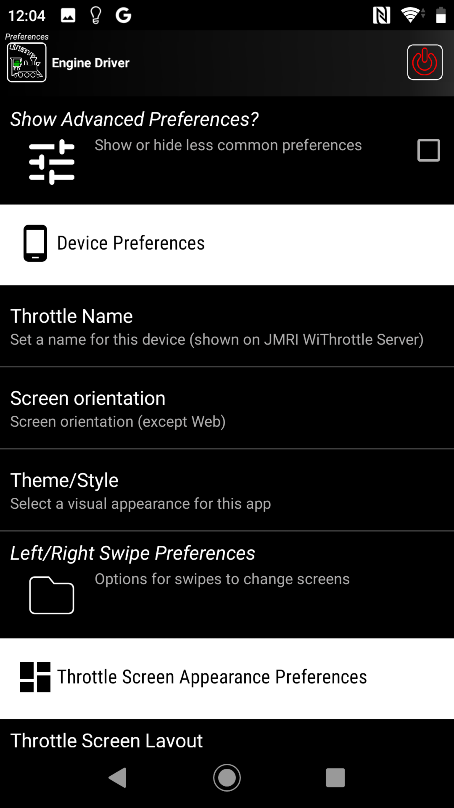{kind=link}
Accessed from any of the main screens via .
This screen allows you to personalise Engine Driver for how you want it to use it.
Note
See the Preferences page for details on the preferences that can be set.
In Phone Loco Sounds Screen
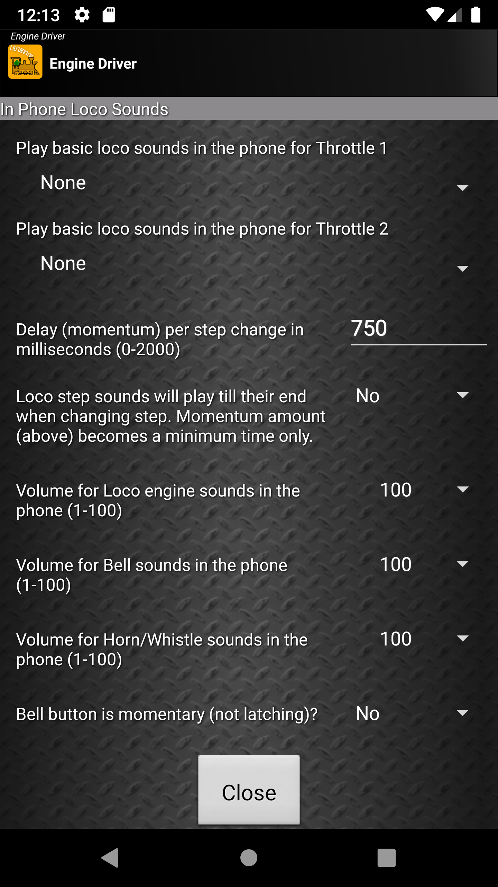{kind=link}
This screen allows you to set Engine Driver to play synchronised loco sounds through the speaker of your Android device / phone, or through BlueTooth speakers connected to it.
See Virtual Sounds - In Phone Loco Sounds (IPLS) for more information.
Accessed from Throttle Screen by the or from the Status Bar if enabled with the In phone sounds button preference.
Function Defaults Screen
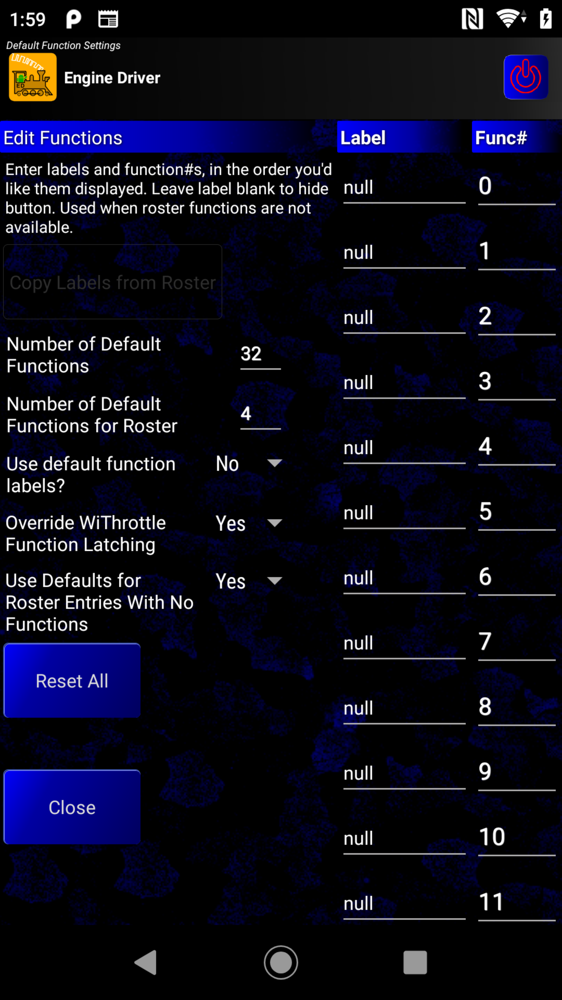{kind=link}
This screen allows you to override the appearance of the Function buttons on the throttle screen, primarily for locos that have not been acquired from the Server Roster.
Some of these have equivalent items in the preferences.
Accessed from the menu on the Throttle Screen as .
Number of Default Functions
This preference is used to limit the number of Function Labels shown for selected locos that are not from the Server Roster, or where you have set the Use default function labels? preference.
Number of Default Functions for Roster
This preference is used to limit the number of Function Labels shown for Server Roster Entries that don’t have any function Labels configured.
Use Default Function Labels
If this preference is enabled locos acquired from the Server Roster will also use the default function labels as defined on this screen.
Override WiThrottle Default Latching
If this preference is enabled an additional Function Latching Settings Screen will be available from the menu.
The DCC-EX Function Settings Screen then allows you override to default latching/momentary behaviour of all/any function for locos acquired from the DCC-EX EX-CommandStation by entering is DCC address . i.e. not locos acquired from the roster.
Use Defaults for Roster Entries With no functions
If this preference is enabled, locos in the Server Roster that have no function buttons defined will show no Function buttons on the Throttle Screen.
If this preference is NOT enabled, locos in the Server Roster that have no function buttons defined will show the default functions and and labels as defined on the screen.
This preference is enabled by default.
Function List
The function list shows up to 32 functions with both a number and a label.
The Function Number defines which DCC function number should be activated when you click the corresponding button on the Throttle Screen.
Not all numbers (0-31) need be included.
The order of the number can be changed.
The Function Label defines what label/text should show on the corresponding button on the Throttle Screen.
Function Latching Settings Screen
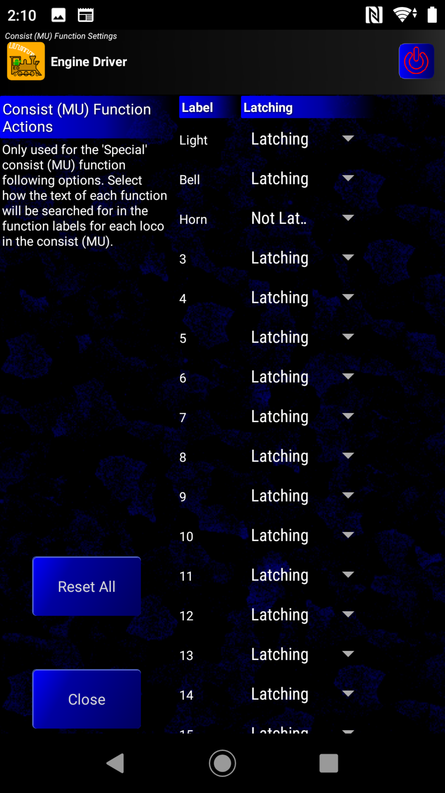{kind=link}
Todo
Function Latching Settings Screen
The function list shows 32 functions with both a label and a drop-list to say if the function should be latching or not (momentary).
This screen is only available in the menu if the Override WiThrottle Default Latching option is enabled on the Function Defaults Screen and you are are connected to a WiThrottle server. (Not an DCC-EX EX-CommandStation using the DCC-EX Native protocol.)
Accessed from the menu on the Throttle Screen as .
DCC-EX Function Settings Screen
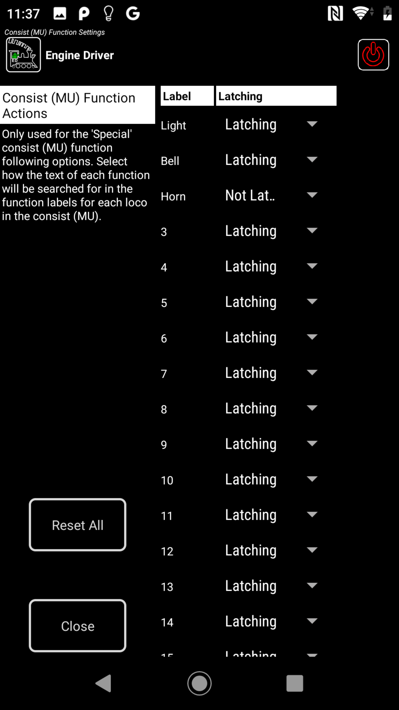{kind=link}
This screen allows you to override to default latching/momentary behaviour of all/any function for locos acquired from the DCC-EX EX-CommandStation by entering is DCC address . i.e. not locos acquired from the Server Roster.
This screen is effectively the same as the Function Latching Settings Screen but is only available when connected to an DCC-EX EX-CommandStation using the DCC-EX Native protocol. (Not WiThrottle protocol)
Accessed from the menu on the Throttle Screen as .
DCC-EX Screen
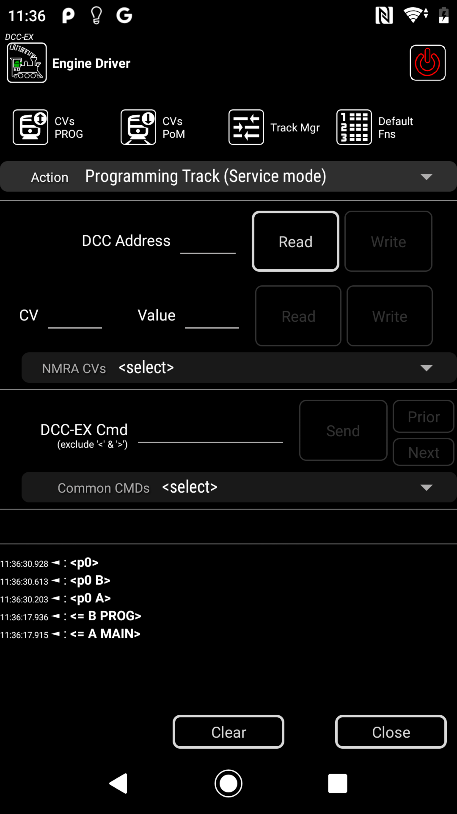{kind=link}
This screen allows you to perform a number of DCC-EX EX-CommandStation specific actions including reading and writing CVs.
See Features when using the Native Protocol when connected to a DCC-EX EX-CommandStation for more information.
This menu item and screen is only available if connected to a DCC-EX EX-CommandStation using the Native DCC-EX Protocol.
Accessed from the menu on the Throttle Screen as .
Gamepad Test Screen
Todo
Gamepad Test Screen
Accessed from the Throttle Screen via the . (where ‘X’ is the number of the gamepad.)
View Log Screen
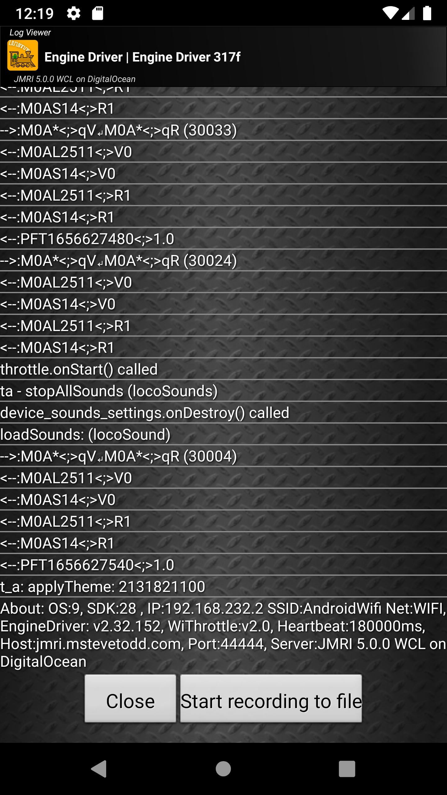{kind=link}
This screen allows you to view the internal Engine Driver log of events. This is sometimes useful for analysing problems.
The option to Start recording to file creates a user-accessible file that can be sent to the Engine Driver app developers or the Groups.io help group to assist you in resolving a problem.
The file will be located on your mobile phone at:
Internal storage /Android/data/jmri.enginedriver/files. It will be named something like: logcat9999999999999.txt.
Note: This location cannot be accessed easily on later versions of Android (>13). So to see it or send to the developers for support you must connect your device/phone to a PC.
Enable the Show Timestamps on Log? preference to include the timestamp on each line of the log.
Accessed from any of the main screens via .
About Screen
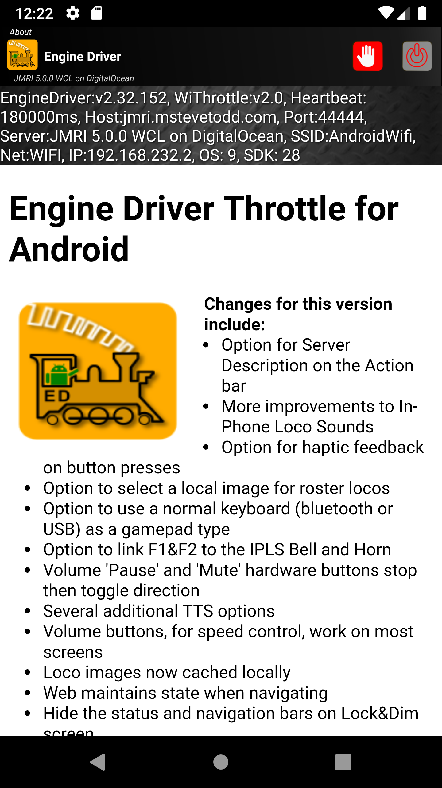{kind=link}
This screen displays
Information about Engine Driver
Information about the WiThrottle Server or DCC-EX Server it is currently connected to (if any)
A page of basic information about Engine Driver
Displayed information includes:
OS: (Android version)
SDK:
DeviceID:
IP: (of the device/phone)
SSID:
Net:
EngineDriver: (version)
Protocol: (WiThrottle or DCC-EX)
Heartbeat:
Host: (IP Address) Port:
Server: (details)
Reconnecting Screen
This screen displays if Engine Driver has not been able to communicate with the WiThrottle Server or DCC-EX Server within a specified time.
Todo
Reconnecting Screen
Common Elements and Features
This section describes some of the elements and features that appear throughout or affect the entire Engine Driver app.
Overflow Menu (the Menu)
Theme / Styles
Themes provide different colours and textures to the buttons, backgrounds, sliders etc. for all the screens in Engine Driver. i.e. It changes the appearance of the entire app.
There are a number of themes to choose from:
Example |
Theme |
|---|---|
| 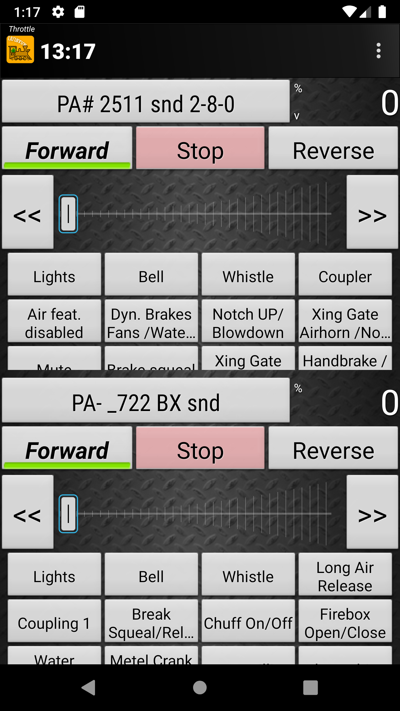 | Original theme |
| 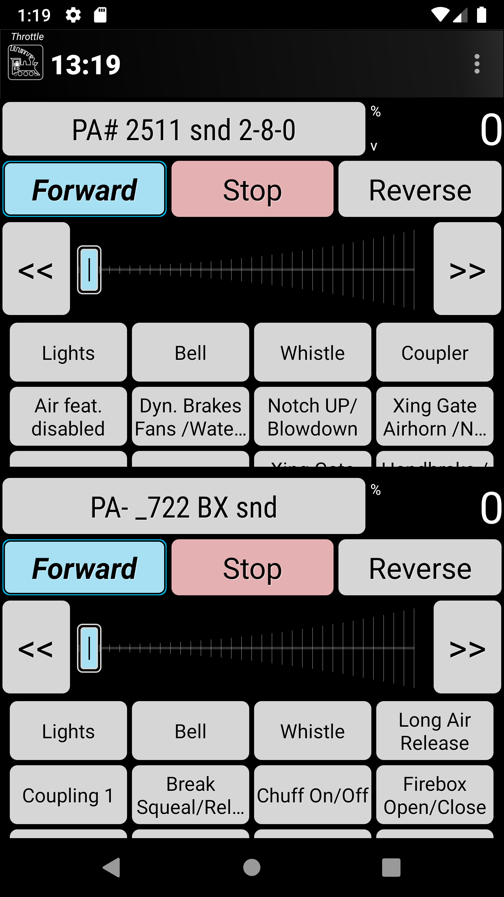 | High contrast theme |
| 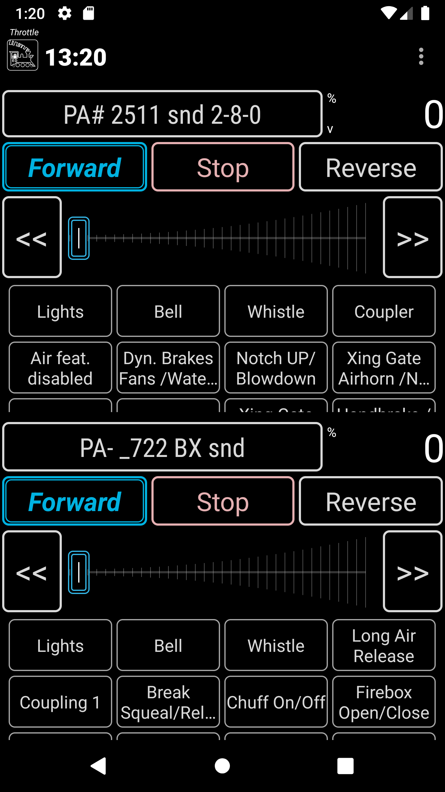 | High contrast |
| 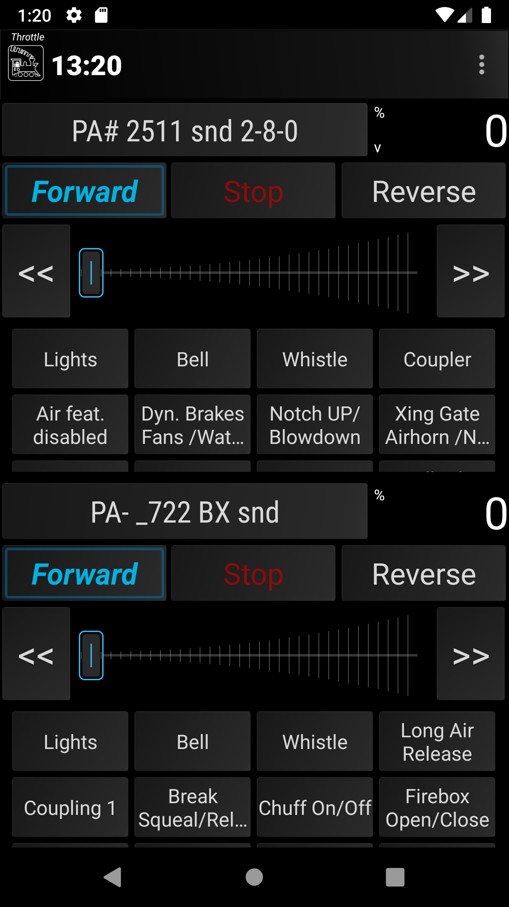 | Dark theme |
| 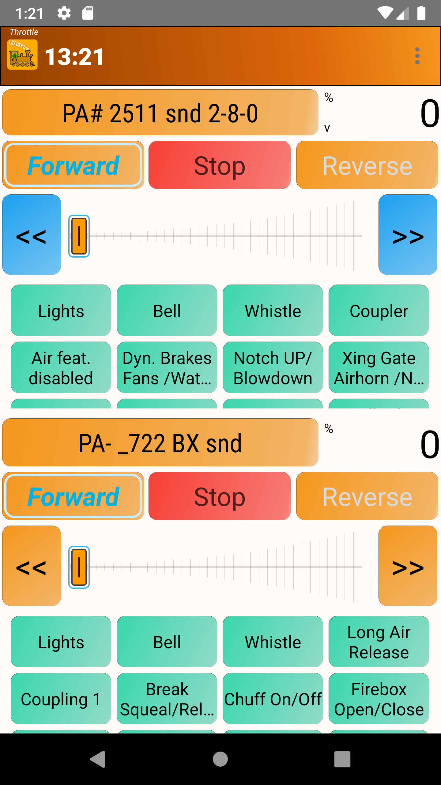 | Colourful theme |

|
Neon Blue theme |
{kind=link}
{kind=link}
{kind=link}
{kind=link}
{kind=link}
Note
See the Theme / Style preference on the preferences page for more information.
Localisation
Changing the Localisation primarily changes the language used in the menus, buttons and messages throughout Engine Driver.
Supported localisations are:
Use Phone’s global setting
English (US) - Engine Driver’s default
English (UK)
English (AUS)
English (NZ)
Italian
Portuguese
German
Spanish
Catalan
French (FR)
French (CA)
Czech
Japanese
Note
See the Localisation preference on the Preferences page for more information.
Action Bar
The Action Bar appears at the top of all screens. It will show different information and different buttons depending on a) the particular screen and b) preferences you have set.
The Action Bar can display:
The app name (Engine Driver)
Optionally configured information:
Fast Clock
Children’s Timer Status and Countdown
Full Screen or Action Bar Only left/right swipe
WiThrottle Server or DCC-EX Server Name
Optionally configured buttons:
Emergency Stop (EStop)
Track Power
Flashlight
Throttle Web View
Throttle Layout Switching
In Phone Loco Sound
DCC-EX
Children’s Timer
The optional buttons are enabled and configured via the corresponding preferences in the Throttle Screen Action Bar preference group. (Other than the Children’s Timer which is configured in the Children’s Timer preference group.)
{kind=link}
{kind=link}
{kind=link}
{kind=link}
{kind=link}
{kind=link}
{kind=link}
Fast Clock
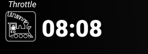{kind=link}
Todo
Fast Clock
The Fast Clock Action Bar button is enabled with the Fast Clock Display preference.
Note
See JMRI’s Fast Clock page for information on how to set up a Fast Clock.
Children’s Timer Status and Countdown
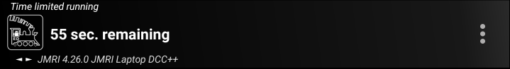{kind=link}
Todo
Children’s Timer Status and Countdown
Note
See the Children’s Timer part of the Advance Operation page for more information.
Full Screen or Action Bar Only left/right swipe
Todo
Full Screen or Action Bar Only left/right swipe
WiThrottle Server Name
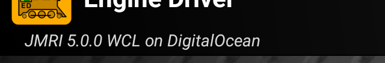{kind=link}
Todo
WiThrottle Server Name